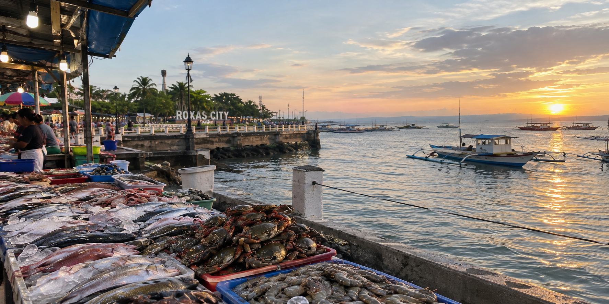
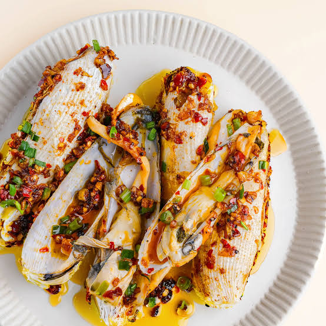
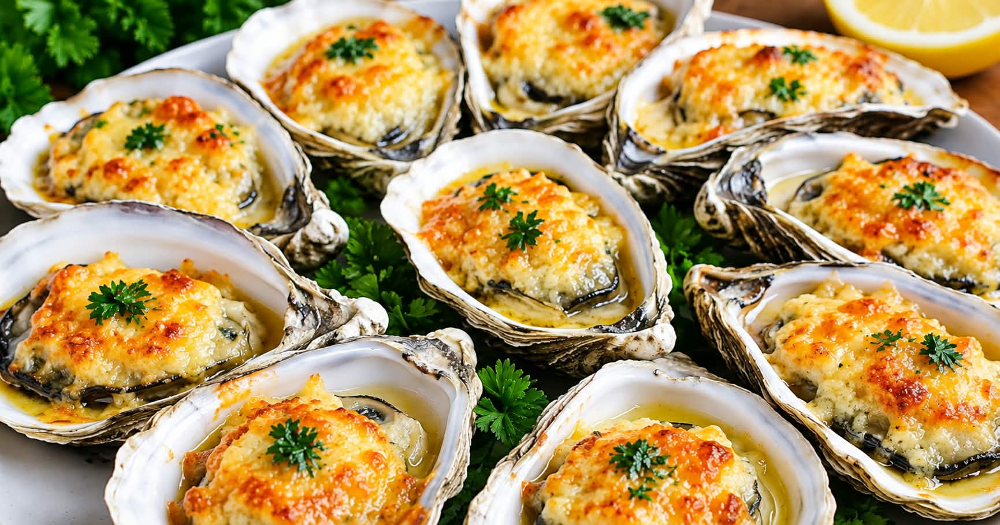

WESTERN VISAYAS FOOD GUIDE
Welcome to Capiz
Seafood, culture, and local flavors-DISCOVER CAPIZ-
About Capiz
Discover the beauty and flavors of Capiz, a province in Western Visayas known for its fresh seafood, rich culture, and beautiful coastal views. Often called the Seafood Capital of the Philippines, Roxas City offers a taste of local favorites like oysters, crabs, shrimp, and freshly caught fish. But Capiz is more than just good food. It is also home to historic landmarks, scenic beaches, and traditions that show the warmth and creativity of its people. Whether you're a food lover or a traveler looking for new experiences, Capiz has something special waiting for you. Come and explore the flavors, culture, and beauty that make Capiz worth visiting!
TASTE OF CAPIZ
Signature Dishes
Scroll sideways to explore the local favorites.
Diwal
Diwal, also known as angel wing clams, is a prized seafood delicacy associated with Capiz, especially Roxas City. These shellfish have tender meat and a naturally sweet, delicate flavor. They can be grilled, steamed, or cooked with garlic, butter, and chili.
Ingredients
- 1 kg diwal (angel wing clams), cleaned
- 4 tbsp butter
- 5 cloves garlic, minced
- 1 thumb-size ginger, sliced
- 1 to 2 siling labuyo (optional)
- 1/2 cup water
- 1 tbsp calamansi juice
- Salt and pepper to taste
- Chopped spring onion, for topping
Steps
- Soak the clams in clean, lightly salted water for 30 minutes to remove sand, then rinse well.
- Melt the butter in a wide pan and sauté the garlic and ginger until fragrant.
- Add the clams and chili, pour in the water, and cover. Cook for 3 to 5 minutes until the shells open.
- Season with salt and pepper, add the calamansi juice, and toss.
- Top with spring onion and serve hot. Discard any shells that did not open.

Baked Talaba
Baked Talaba is a highly popular Filipino seafood appetizer and party favorite. Freshly shucked oysters are baked until bubbly and browned, combining the juicy, briny taste of the sea with a rich, savory garlic-butter and melted cheese topping.
Ingredients
- 12 fresh oysters (talaba), on the half shell
- 3 tbsp butter, melted
- 4 cloves garlic, minced
- 1/2 cup grated cheese (cheddar or mozzarella)
- 1 tbsp chopped parsley
- Calamansi wedges, for serving
Steps
- Preheat the oven to 200°C (400°F).
- Scrub the oysters, shuck them, and keep each one in its half shell on a baking tray.
- Mix the melted butter and garlic, then spoon a little over each oyster.
- Top each oyster with grated cheese.
- Bake for 10 to 12 minutes until bubbly and golden.
- Sprinkle with parsley and serve with calamansi.

Kinilaw na Ugpan
Kinilaw na Ugpan is a traditional Filipino dish featuring Ugpan (Lingula anatina, also known as tongue shells or duck's foot clams), a unique delicacy found along shallow, sandy tidal flats in the Philippines. When served kinilaw-style, the tender stalks are cleaned and tossed with a tangy mixture of local vinegar or calamansi juice, ginger, onions, and fresh chilis to create a refreshing, sea-salty dish.
Ingredients
- 250 g ugpan, cleaned
- 1/2 cup cane or coconut vinegar
- 4 calamansi, juiced
- 1 thumb-size ginger, cut into thin strips
- 1 red onion, thinly sliced
- 2 siling labuyo, sliced
- Salt to taste
Steps
- Rinse the ugpan several times in clean water until no sand remains. Use only very fresh ugpan from clean waters.
- Blanch in boiling water for about 30 seconds, then drain and cool.
- Rinse the ugpan briefly in a little vinegar and drain to remove any fishy smell.
- Toss with fresh vinegar, calamansi juice, ginger, onion, chili, and salt.
- Let it rest for 10 to 15 minutes, then serve chilled.

Binakol na Alimango
Binakol na Alimango is a traditional Visayan seafood delicacy (notably from Capiz and neighboring Western Visayas provinces). Unlike typical coconut milk dishes, binakol dishes are highlighted by the natural sweetness of coconut water (buko juice) blended into the broth or reduction, giving the savory and spiced crabs a distinct light sweetness.
Ingredients
- 2 medium crabs (about 1 kg), cleaned and cut
- 3 cups buko (young coconut) water
- 1 cup buko meat, cut into strips
- 1 thumb-size ginger, sliced
- 2 stalks lemongrass, bruised
- 1 onion, sliced
- 3 cloves garlic, crushed
- 1 cup malunggay or pechay leaves
- 1 tbsp cooking oil
- Salt and pepper to taste
Steps
- Heat the oil and sauté the garlic, onion, and ginger until soft.
- Add the lemongrass and crab pieces and stir for 2 minutes.
- Pour in the buko water, cover, and simmer for 12 to 15 minutes until the crab turns orange-red.
- Add the buko strips and season with salt and pepper.
- Add the leaves, cook for 2 more minutes, and serve hot with rice.

Garlic Buttered Shrimp
Garlic Buttered Shrimp is a flavorful seafood dish made with fresh shrimp sautéed in butter, garlic, and seasonings. Its sweet, juicy shrimp and rich, savory sauce make it a favorite served with hot steamed rice.
Ingredients
- 500 g shrimp, cleaned
- 4 tbsp butter
- 6 cloves garlic, minced
- 1 tbsp calamansi juice
- 1/2 tsp chili flakes (optional)
- Salt and pepper to taste
- Chopped parsley, for topping
Steps
- Pat the shrimp dry and season with salt and pepper.
- Melt the butter in a pan over medium heat and sauté the garlic until golden.
- Add the shrimp and cook for 2 to 3 minutes per side until pink and curled.
- Add the chili flakes and calamansi juice, then toss in the sauce.
- Top with parsley and serve with hot steamed rice.
LOCAL TIP
JOIN THE CONVERSATION
Comments
Share your favorite Capiz dish or a place to eat in Roxas City.Comments (0)
Comments are saved in this browser only.